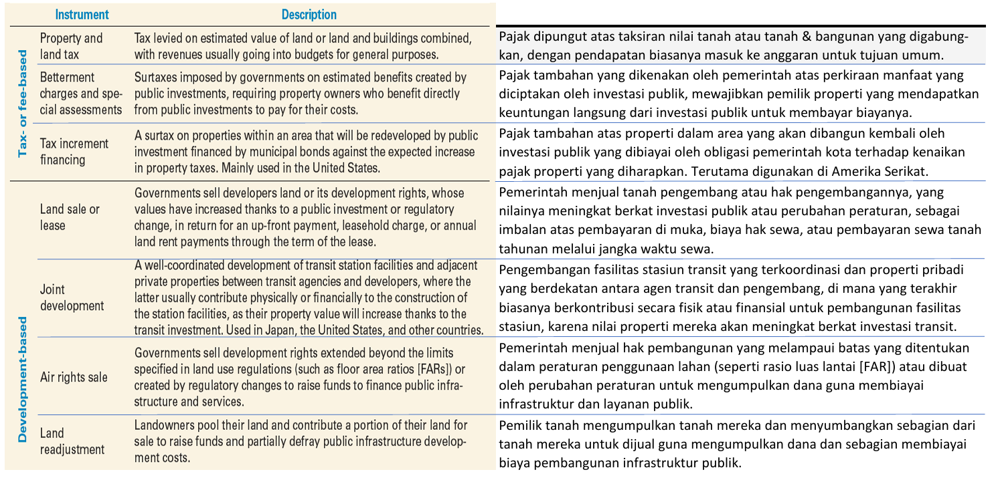

Land Value Capture
LVC adalah metode pembiayaan publik dimana pemerintah memicu peningkatan nilai tanah melalui peraturan dan / atau investasi infrastruktur; dan menggunakan hasil LVC untuk membiayai investasi infrastruktur.
Kategori LVC
Terdapat 2 kategori LVC, yaitu (1) LVC berbasis pajak dan atau retribusi (tax or fee based), dan (2) berbasis pembangunan (development based), seperti yang dijelaskan secara lebih rinci pada tabel berikut :
